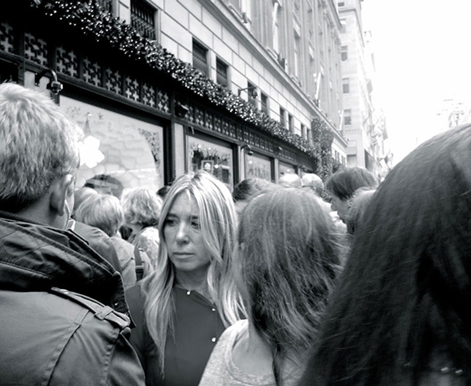

New York Minute
I traveled to New York city in the winter of 2013-2014 and wrote about my experiences and observations for my blog Places and Spaces. It was just a moment in time in the pre-Christmas chaos.
I traveled to New York city in the winter of 2013-2014 and wrote about my experiences and observations for my blog Places and Spaces. It was just a moment in time in the pre-Christmas chaos.